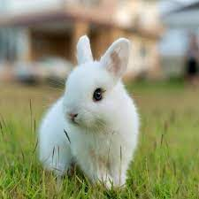

É preciso estar muito atento à sua alimentação, pois é uma raça bastante gulosa, que costuma desenvolver problemas de sobrepeso e até obesidade com relativa facilidade. Mas isso pode ser evitado fornecendo a eles uma dieta balanceada e ajustada às suas necessidades nutricionais específicas. Deve-se sempre ter em mente que a dieta do coelho branco Hotot, assim como a de qualquer outro coelho, deve ser baseada no consumo de feno suplementado com frutas e vegetais frescos.

Monica
Monica
O coelho branco Hotot ou coelho Hotot é um coelhinho lindo, caracterizado por seu pelo branco puro com manchas pretas que colorem a área ao redor de seus olhos grandes e expressivos. Mas o coelho Hotot não impressiona apenas pela sua aparência, porque sua personalidade não fica atrás. O Hotot é um coelho simpático, carinhoso e muito calmo, que adora a companhia e atenção de sua família e ama compartilhar grandes momentos com ela.